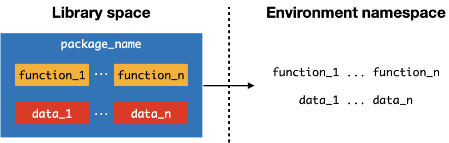

Extending R#
We have seen how functionality can be encapsulated in functions that abstract away details. A collection of functions (and associated data, if any) can be grouped together into a library called a package
The use of packages can extend the functionality of R
We can list the packages that are currently loaded into our environment by using the .packages function and printing it out
print(.packages())
[1] "stats" "graphics" "grDevices" "utils" "datasets" "methods"
[7] "base"
For example, we will look at the paste function from the built-in base package. To look for documentation about a function, we prepend the function name with ?
?paste
Let us see how paste can be used to generate a string output by joining/concatenating values together
# Create variables for a patient
pt_name <- "Alice"
pt_age <- "10"
pt_symptom <- "wheezing"
pt_symptom_duration <- 2
pt_symptom_duration_unit <- "day(s)"
# Print a string that incorporates the variables
paste(pt_name, "is a", pt_age, "year-old patient who presented with", pt_symptom, "for", pt_symptom_duration, pt_symptom_duration_unit)
Loading a library package into current environment#
We can use the
libraryfunction to list packages that have been installed
library()

To use a library, it must be loaded into the working environment (namespace) so that the functions can be recognized and run
As an example, we will load another library called glue that offers a different way of generating a string output from different variables
To load it we specify the name when calling the
libraryfunction
library(glue)
# Check if it is loaded into environment
print(.packages())
[1] "glue" "stats" "graphics" "grDevices" "utils" "datasets"
[7] "methods" "base"
Once a package is loaded, we can find information about its usage using the help function and specifying the package name
help(package="glue")
We can find help for the glue function inside the glue library
?glue # see documentation about function
We can now use the glue function to generate the string output
# Create variables for a patient
pt_name <- "Alice"
pt_NRIC <- "S1041233J"
pt_age <- "10"
pt_symptom <- "wheezing"
pt_symptom_duration <- 2
pt_symptom_duration_unit <- "day(s)"
Instead of joining them in sequence, we can use the { } brackets to indicate where a variable should be substituted when generating a string
glue("{pt_name} ({pt_NRIC}) is a {pt_age}-year-old patient who presented with {pt_symptom} for {pt_symptom_duration} {pt_symptom_duration_unit}")
Unloading a library from the current environment#
If we want to remove a library from our environment, we use the detach function and specify "package:<PACKAGE NAME>"
detach("package:glue")
glue
Error in eval(expr, envir, enclos): object 'glue' not found
Traceback:
Using a library function without loading it#
Occasionally we would like to use just a specific function from a library, without loading the entire package
To do this, we can call a function by prepending
<PACKAGE NAME>::"to the function of interest
function_name <- "glue"
package_name <- "glue"
glue::glue("we are using the {function_name} function from the {package_name} package without loading it")
Finding packages from libraries#
R has a rich ecosystem with many packages that are organized into repositories.
The main repository is CRAN (Comprehensive R Archive Network): https://cran.r-project.org. You can browse packages
Alphabetically: https://cran.r-project.org/web/packages/available_packages_by_name.html
By tasks: https://cran.r-project.org/web/views/
To install a package, we use the install.packages function and specify the name of package. Note that by default, the repository used is CRAN
install.packages("secrettext")
also installing the dependencies ‘rprojroot’, ‘diffobj’, ‘brio’, ‘desc’, ‘pkgload’, ‘praise’, ‘waldo’, ‘testthat’
Updating HTML index of packages in '.Library'
Making 'packages.html' ...
done
library()
Having installed secrettext, we can load it and find out about its functions
library(secrettext)
# Documentation about package
help(package="secrettext")
# Documentation about setcode function
?setcode
# Documentation about decode function
?decode
We can now use the functions in the secrettext library
setcode: encrypt input using key1 and key2decode: decrypt input using key1 and key2
# Encrypt NRIC with key1 = 4, key2 = 6
pt_NRIC_encrypt<- setcode(pt_NRIC, key1 = 4, key2 = 6)
pt_NRIC_encrypt
# Decode but with wrong key1 and key2
decode(pt_NRIC_encrypt, key1 = 24, key2 = 23)
# Decode with original key1 and key2
decode(pt_NRIC_encrypt, key1 = 4, key2 = 6)
Finding other repositories#
CRAN is the default repository. We can confirm this by using the getOption function and specifying "repos"
getOption("repos")
To get a list of repositories, we use and internal function .get_repositories from the tools library
tools:::.get_repositories()
| menu_name | URL | default | source | win.binary | mac.binary | |
|---|---|---|---|---|---|---|
| <chr> | <chr> | <lgl> | <lgl> | <lgl> | <lgl> | |
| CRAN | CRAN | @CRAN@ | TRUE | TRUE | TRUE | TRUE |
| BioCsoft | BioC software | https://bioconductor.org/packages/3.16/bioc | FALSE | TRUE | TRUE | TRUE |
| BioCann | BioC annotation | https://bioconductor.org/packages/3.16/data/annotation | FALSE | TRUE | TRUE | TRUE |
| BioCexp | BioC experiment | https://bioconductor.org/packages/3.16/data/experiment | FALSE | TRUE | TRUE | TRUE |
| CRANextra | CRAN (extras) | https://www.stats.ox.ac.uk/pub/RWin | FALSE | TRUE | FALSE | FALSE |
| R-Forge | R-Forge | https://R-Forge.R-project.org | FALSE | TRUE | TRUE | TRUE |
| rforge.net | rforge.net | https://www.rforge.net | FALSE | TRUE | TRUE | TRUE |
Bioconductor#
Bioconductor is another popular repository that provides tools for analysis of biological data: https://www.bioconductor.org/
List of packages: https://www.bioconductor.org/packages/release/BiocViews.html#___Software
We will install the Biostrings package that can be used to manipulate genetic sequences
install.packages("Biostrings")
Warning message:
“package ‘Biostrings’ is not available for this version of R
A version of this package for your version of R might be available elsewhere,
see the ideas at
https://cran.r-project.org/doc/manuals/r-patched/R-admin.html#Installing-packages”
Our current set-up only has CRAN as its repository. To add more repositories, we use the setRepositories function with the ind argument that accepts a vector of indices corresponding to each repository
setRepositories(ind=c(1:8)) # we include all known repositories
getOption("repos")
- CRAN
- 'https://cran.r-project.org'
- BioCsoft
- 'https://bioconductor.org/packages/3.16/bioc'
- BioCann
- 'https://bioconductor.org/packages/3.16/data/annotation'
- BioCexp
- 'https://bioconductor.org/packages/3.16/data/experiment'
- CRANextra
- 'https://www.stats.ox.ac.uk/pub/RWin'
- R-Forge
- 'https://R-Forge.R-project.org'
- rforge.net
- 'https://www.rforge.net'
- 8
- NA
Now that we have included the bioconductor repository, we can install the Biostring package and load it. The installation may take some time
install.packages("Biostrings")
Warning message:
“unable to access index for repository NA/src/contrib:
cannot open URL 'NA/src/contrib/PACKAGES'”
also installing the dependencies ‘zlibbioc’, ‘RCurl’, ‘GenomeInfoDbData’, ‘BiocGenerics’, ‘S4Vectors’, ‘IRanges’, ‘XVector’, ‘GenomeInfoDb’
Updating HTML index of packages in '.Library'
Making 'packages.html' ...
done
library(Biostrings)
Loading required package: BiocGenerics
Attaching package: ‘BiocGenerics’
The following objects are masked from ‘package:stats’:
IQR, mad, sd, var, xtabs
The following objects are masked from ‘package:base’:
anyDuplicated, aperm, append, as.data.frame, basename, cbind,
colnames, dirname, do.call, duplicated, eval, evalq, Filter, Find,
get, grep, grepl, intersect, is.unsorted, lapply, Map, mapply,
match, mget, order, paste, pmax, pmax.int, pmin, pmin.int,
Position, rank, rbind, Reduce, rownames, sapply, setdiff, sort,
table, tapply, union, unique, unsplit, which.max, which.min
Loading required package: S4Vectors
Loading required package: stats4
Attaching package: ‘S4Vectors’
The following object is masked from ‘package:secrettext’:
decode
The following objects are masked from ‘package:base’:
expand.grid, I, unname
Loading required package: IRanges
Loading required package: XVector
Loading required package: GenomeInfoDb
Attaching package: ‘Biostrings’
The following object is masked from ‘package:base’:
strsplit
As an example, we will use the DNAString function that creates a new data structure to store DNA sequences
dna <- DNAString('ATGATAGCTAGCTCGCTACTA')
dna
21-letter DNAString object
seq: ATGATAGCTAGCTCGCTACTA
With this new data structure, we can use functions such as translate on DNA sequences
translate(dna)
7-letter AAString object
seq: MIASSLL
Summary#
print(.packages())to view packages currently in environmentlibrary()to view installed packageslibrary(PACKAGE NAME)to load packagedetach("package:PACKAGE NAME, unload=TRUE)to unload packagehelp(package="PACKAGE NAME")to view help for package?FUNCTION NAME to view help for function in loaded packagePACKAGE NAME
::FUNCTION to use a function in a package without loading itinstall.packages("PACKAGE NAME")to install packagetools:::.get_repositories()to list all available repositoriesgetOption("repos")to list current repositoriessetRepositories(ind=c(1:8))to include all repositories